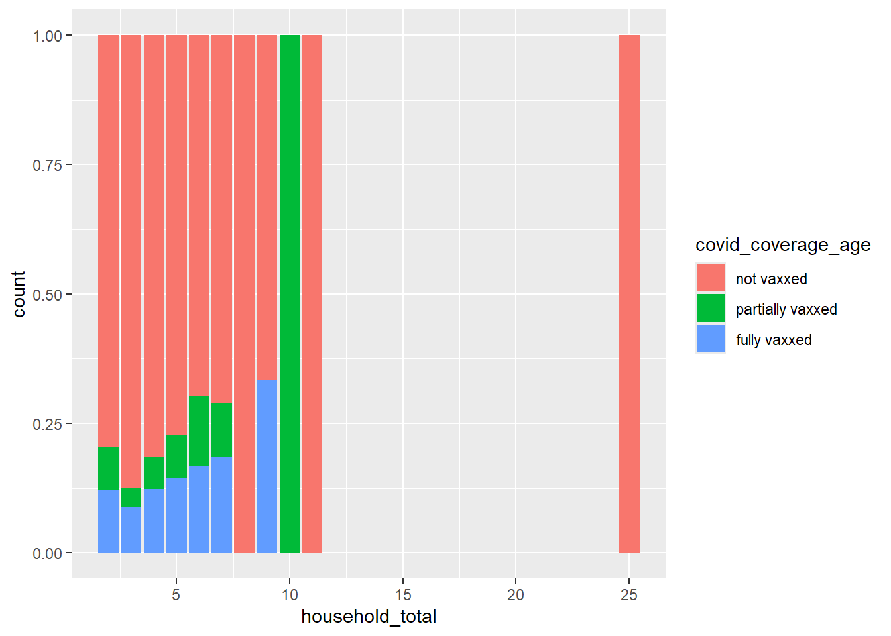

# transformed independent variable data
ivd <-
readRDS(
here(
"Data",
"JACSIS2023",
"processed",
"transformed_independent_variable_data.RDS"
)
)
# transformed covid data
cov <-
readRDS(
here(
"Data",
"JACSIS2023",
"processed",
"transformed_covid_data.RDS"
)
)
# transformed influenza data
inf <-
readRDS(
here(
"Data",
"JACSIS2023",
"processed",
"transformed_influenza_data.RDS"
)
)04_Exploratory_Data_Analysis
Load Packages
These are the packages that have been used throughout the following document: here, tidyverse, lubridate, knitr
other packages will be loaded as needed
Reading data
Creating data frames for bivariate and multivariate analysis
Influenza data
Distribution of coverage by number of doses and the degree of coverage (since october 2022)
By degree of coverage
inf |>
filter(!is.na(influenza_coverage_age)) |>
summarise(individuals = n(), .by = influenza_coverage_age) |>
mutate(proportion = individuals / sum(individuals)) |>
arrange(influenza_coverage_age) |>
mutate(
influenza_coverage_age = case_when(
influenza_coverage_age == 0 ~ "Not vaxxed",
influenza_coverage_age == 1 ~ "Partially vaxxed",
influenza_coverage_age == 2 ~ "Fully vaxxed"
)
) |>
ggplot(aes(x = influenza_coverage_age, y = proportion)) + geom_col() +
geom_text(aes(label = individuals), vjust = 1.0) +
ggtitle(
paste(
"Vaccination status of eligible children, N =",
sum(!is.na(inf$influenza_coverage_age))
)
)
By number of doses
inf |>
filter(!is.na(influenza_coverage_dosage)) |>
summarise(individuals = n(), .by = influenza_coverage_dosage) |>
mutate(proportion = individuals / sum(individuals)) |>
arrange(influenza_coverage_dosage) influenza_coverage_dosage individuals proportion
1 0 3684 0.67497252
2 1 408 0.07475266
3 2 1366 0.25027483A majority of the children (68%) who are eligible for the influenza vax have not receieved the vaccine at all (i.e. 0 doses or Not vaxxed). However, within the children who have receieved at least one dose of the vaccine (~32%), a much greater proportion of them are considered fully vaxxed than being partially vaxxed (a ratio of 10:1).
This is supported by data on the number of doses received, the ratio of individuals who have received 2 doses as compared to 1 dose is roughly 3:1 (25:7.5). The discrepnacy in ratios can be explained by children below the age of 5 being considered fully vaxxed individuals upon receiving 1 or more doses of the influenza vax
Covid data
Distribution of coverage by number of doses and the degree of coverage (since october 2022)
By degree of coverage
cov |>
filter(!is.na(covid_coverage_age)) |>
summarise(individuals = n(), .by = covid_coverage_age) |>
mutate(proportion = individuals / sum(individuals)) |>
arrange(covid_coverage_age) |>
mutate(
covid_coverage_age = case_when(
covid_coverage_age == 0 ~ "Not vaxxed",
covid_coverage_age == 1 ~ "Partially vaxxed",
covid_coverage_age == 2 ~ "Fully vaxxed"
)
) covid_coverage_age individuals proportion
1 Not vaxxed 4338 0.79479663
2 Partially vaxxed 305 0.05588128
3 Fully vaxxed 815 0.14932210By number of doses
cov |>
filter(!is.na(covid_coverage_dosage)) |>
summarise(individuals = n(), .by = covid_coverage_dosage) |>
mutate(proportion = individuals / sum(individuals)) |>
arrange(covid_coverage_dosage) covid_coverage_dosage individuals proportion
1 0 4338 0.79479663
2 1 113 0.02070355
3 2 265 0.04855258
4 3 742 0.13594723Majority of individuals who exist in
The data on covid vaccinations tells a similar story to that of influenza vaccinations. Namely, the proportion of eligible children who are not vaxxed at all remains high at 80% of the children body. However, the proportion of individuals who are partially vaccinated – less than 3 doses for individuals over the age of 5 – is significantly higher (partial:full = 1:3) than that for those who received the influenza vaccine (partial:full = 1:10).
Referencing the number of doses of the covid vaccine received by individuals, we note that 13.6% of the eligible children received 3 doses of the covid vaccine, 1.3% lower than the 14.9% of children who are fully vaxxed – this is explained by children under 5y/o being classified as fully vaccinated as long as they have 1 or more doses of the covid vaccine due to variances in the vaccination schedule of covid vacccines for that age group. Note that majority (85%) of the 5.6% children who are partially vaccinated received 2 doses, 4.8% of all eligible children.
Why are there more children who are partially vaccinated for covid as opposed to the influenza vaccination?
Multivariate analysis
Independent variables
Package used: GGally for pairs plots?
Bivariate analysis
Independent variables
Questions to be asked
Number of individuals
Total number of individuals
The following is a breakdown of the number of households according to number of individuals per household
ivd |>
# group number of households and number of households with children of
# interest by individuals per household
summarise(
households = n(),
households_w_COI = sum(child_of_interest),
percentage_w_COI = signif((households_w_COI / households) * 100, 2),
.by = household_total
) |>
# arrange in ascending order of individuals per household
arrange(.by = household_total) |>
rename(individuals = household_total) -> households_by_indivs
# display a transposed table
households_by_indivs |>
t() |>
as.data.frame() |>
kable(col.names = NULL) | individuals | 1 | 2 | 3 | 4 | 5 | 6 | 7 | 8 | 9 | 10 | 11 | 12 | 15 | 21 | 25 |
| households | 7995 | 10901 | 7149 | 5003 | 1429 | 381 | 97 | 31 | 5 | 3 | 1 | 1 | 1 | 1 | 2 |
| households_w_COI | 0 | 109 | 2244 | 2378 | 673 | 174 | 39 | 11 | 4 | 1 | 1 | 0 | 0 | 0 | 2 |
| percentage_w_COI | 0 | 1 | 31 | 48 | 47 | 46 | 40 | 35 | 80 | 33 | 100 | 0 | 0 | 0 | 100 |
# bar and line plot
households_by_indivs |>
ggplot() +
geom_col(aes(x = individuals, y = households)) +
geom_text(aes(x = individuals, y = households, label = households), vjust = -0.5, size = 2.0) +
geom_line(aes(x = individuals, y = households_w_COI)) +
geom_text(aes(x = individuals, y = households_w_COI, label = paste(percentage_w_COI, "%")), vjust = -2.0, size = 2.0, colour = "skyblue")
Where the bars represent the number of household for each household size and the line graph represents the number of households with a child of interest for each household size
Responses from households of 3 to 5 people posses the majority of children of interest. Households comprise of 2 individuals had very little responses with a child of interest which could be attributed to there being less single-child parents.
To examine how the number of individuals in a household affects the children of interest then, we should primarily be looking at households of at least 2 individuals (children of interest = 109), and up to 7 people (children of interest = 31).
Does the number of individuals in a household affect
- The child’s covid vaccination status
# determine the proportion of individuals who are not, partially and fully vaccinated
# for households of each size
covage_by_total <- cov_ivd |>
filter(household_total > 1 & !is.na(covid_coverage_age)) |>
group_by(household_total, covid_coverage_age) |>
summarise(count = n()) |>
ggplot() +
geom_col(
aes(x = household_total, y = count, fill = covid_coverage_age),
position = "fill"
) +
scale_fill_hue(labels = c("not vaxxed", "partially vaxxed", "fully vaxxed"))`summarise()` has grouped output by 'household_total'. You can override using
the `.groups` argument.# print full graph
covage_by_total
# limit the same plot to households of 2 to 7 individuals
covage_by_total + xlim(1,7)Warning: Removed 9 rows containing missing values or values outside the scale range
(`geom_col()`).For household sizes of 2 to 7 individuals, we see a positive linear relationship between household size and being fully vaccinated. The apparent continuation of this trend with households of size 9 is deceptive as it is due to the small sample size of households of 9 individuals with a COI(n = 3)
- The number of doses of the covid vaccine the child receives
*Following data on the degree of covid coverage by total household size, we limit the range of household sizes to household sizes of siginificantly large (n >= 30) counts.
# determine the proportion of individuals who receive 0 to 3 doses
# for households of each size
cov_ivd |>
# stratify by household size and doses received
filter(household_total > 1 & !is.na(covid_coverage_dosage)) |>
group_by(household_total, covid_coverage_dosage) |>
# count the number of children in each category
summarise(count = n()) |>
ggplot() +
geom_col(
aes(x = household_total, y = count, fill = covid_coverage_dosage),
position = "fill"
) + xlim(1,8)`summarise()` has grouped output by 'household_total'. You can override using
the `.groups` argument.Warning: Removed 6 rows containing missing values or values outside the scale range
(`geom_col()`).
- the child's (influenza) vaccination status
- the number of doses of the influenza vaccine the child receiveNumber of aunts and uncles
Does the number of aunts and uncles a child has affect:
the child’s (covid) vaccination status
the number of doses of the covid vaccine the child receives
the child’s (influenza) vaccination status
the number of doses of the influenza vaccine the child receive
Number of vulnerable individuals
- Does the number of vulnerable individuals living in the same household (this includes individuals who are bedriden, need ventilation and need feeding) affect:
Number of grandparents
- Does the number of grandparents living in the same household affect:
Child and siblings
Total number of siblings
- Does the number of siblings living with the child in the same household affect:
Number of brothers and/or siblings
- Does the number of sisters and or brothers living in the same household as the child affect:
Number of siblings at the time of vaccination
Parents
Number of parents
Does the number of parents a child has affect:
the child’s (covid) vaccination status
the number of doses of the covid vaccine the child receives
the child’s (influenza) vaccination status
the number of doses of the influenza vaccine the child receive
Parent’s marital status
- Does the marital status of the parents affect:
Finances
Annual household income
- Does the family’s annual household income affect:
Chronic illness
Respondent’s chronic illness
- Does the presence of chronic illness in the responding parent affect:
Industry of work
Respondent parent working in healthcare
- Does the respondent parent working in the healthcare sector affect:
Parent’s highest educational attianment
Parent’s highest education by qualification
- Does the highest educational qualification of a child’s parents affect:
Child’s parent’s vaccination
Parent’s influenza vaccination
- Does the influenza vaccination status of a child’s parents in the past year affect:
Parent’s covid vaccination (dosage)
- Does the covid vaccination status of a child’s parents affect:
Recency of parent’s covid vaccination
- Does the recency of a child’s parent’s covid vaccination affect:
Child’s parent’s yearly vaccination intention
- Does the child’s parent’s intention to get the covid vaccine every year affect: